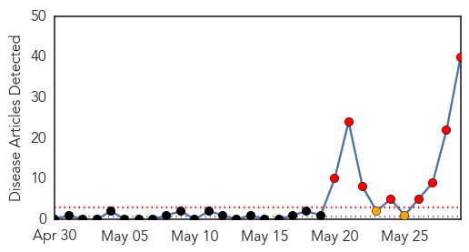
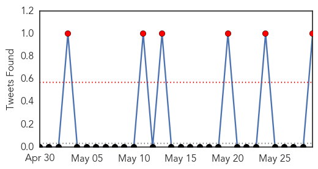
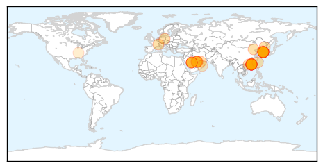
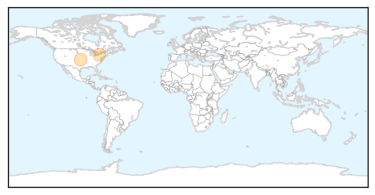

MERS
30-Day Web Trend
8 alerts, 2 warnings

30-Day Twitter Trend
6 alerts, 0 warnings

Article Locations
Article Confidences

Top Articles:
- 1.000
- Middle East respiratory syndrome coronavirus (MERS-CoV)
- 0.999
- China's first confirmed MERS case arrived from Korea
- 0.999
- China's first confirmed MERS case arrived from Korea via Hong Kong
- 0.999
- China's first confirmed MERS case arrived from Korea via Hong Kong
- 0.999
- China's first confirmed MERS case arrived from Korea via Hong Kong
- 0.999
- China's first confirmed MERS case arrived from Korea via Hong Kong
- 0.999
- China's first confirmed MERS case arrived from Korea via Hong Kong
- 0.999
- MERS Virus Now in China and Korea Besides Saudi Arabia
- 0.999
- The Chosun Ilbo (English Edition): Daily News from Korea
- 0.998
- MERS Spreads to China from Korean Outbreak
- 0.998
- MERS fears grow as 13th case confirmed
- 0.998
- China’s first confirmed Mers case ‘arrived from Korea’
- 0.997
- Mers virus: China tracking nearly 200 for possible infections
- 0.996
- Taiwan rules out MERS-CoV ...｜Society｜WCT
- 0.996
- South Korean becomes China's first confirmed MERS case
- 0.996
- UPDATE 2-South Korean becomes China's first confirmed MERS case
- 0.996
- South Korean becomes China's first confirmed MERS case
- 0.996
- South Korean becomes China's first confirmed MERS case
- 0.995
- South Korean becomes China's first confirmed MERS case
- 0.995
- China, Hong Kong on High Alert After Reported MERS Case
- 0.995
- CORRECTED-UPDATE 1-S.Korea's tally of MERS cases at 7; one suspected patient heads to China
- 0.995
- South Korea's tally of MERS cases at 7; one suspected patient heads to China
- 0.994
- China Reports First MERS Virus Case in South Korean Traveler
- 0.993
- China confirms first MERS case
- 0.993
- China confirms first MERS case
- 0.993
- China’s First Encounter with MERS
- 0.993
- Korean brought MERS into China-INSIDE Korea JoongAng Daily
- 0.991
- South Korean becomes China’s first confirmed Mers case, East Asia News & Top Stories
- 0.991
- South Korean becomes China’s first confirmed Mers case, East Asia News & Top Stories
- 0.991
- Concern grows over spread of Mers as man defies quarantine, travels to China
- 0.990
- South Korean Man Becomes China's First Confirmed MERS Case
- 0.990
- A deadly SARS-like virus has jumped from the Middle East to East Asia
- 0.989
- Seoul confirms seventh MERS case , news, Health News, AsiaOne YourHealth
- 0.988
- Beijing made 'tight plans' to prevent spread of MERS virus[1]- Chinadaily.com.cn
- 0.988
- Beijing made 'tight plans' to prevent spread of MERS virus
- 0.979
- Health Ministry inspects MERS-CoV preventive measures in Can Tho
- 0.978
- China confirms first MERS virus case
- 0.971
- Taiwan takes precautions against MERS
- 0.762
- Qatar reports 1st coronavirus fatality this year
- 0.562
- Deadly viruses lurking in Tennessee labs
Top Tweets:
- 0.555
- Avian Flu Diary: Hong Kong Activates Alert Response To MERS-CoV http://t.co/Nibs2K73UD
West Nile Virus
30-Day Web Trend
0 alerts, 0 warnings

30-Day Twitter Trend
0 alerts, 0 warnings

Article Locations
Article Confidences
Top Articles:
Top Tweets:
-
No tweets found for May 29, 2015